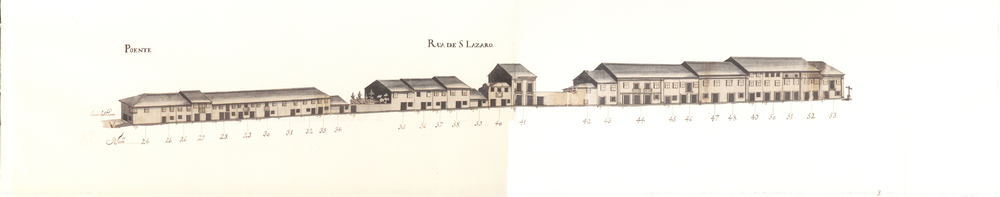

Rua de S.Lázaro - Nascente.

Rua de S.Lázaro - Poente.
Troço da grande via que ligava a Arcada à ponte de Guimarães , entre a rua de Águas e o terreiro de S. Lázaro .
Aberta ainda na Idade Média esta velha rua tem o prazo mais antigo com a data de 1451 .
Apesar de em 1750 ser ainda de arrabalde, havia nas suas casas uma certa diferença em relação a outras com função semelhante: embora apenas com dois pisos, e apesar de haver algumas habitações do tipo já descrito de porta com janela ao lado no piso térreo, a maior largura das suas fachadas, a existência de uma ou outra varanda de ferro ou recoberta por gelosias, ou ainda de "molduras" de pedra, sobretudo em algumas portas, confere-lhe quase outro estatuto de grandeza.
É curioso notar que nesta rua, que tinha 19 casas do lado Nascente e 29 do Poente, todos os edifícios estavam emprazados ao Cabido .
A rua de S. Lázaro corresponde hoje ao fragmento da avenida da Liberdade , entre o largo do Rechicho e a rua 25 de Abril .
Rua de S.Lázaro - Nascente.
Rua de S.Lázaro - Poente.
| Número da Casa | Enfiteuta | Foro | Descrição |
|---|---|---|---|
| 1 | Lopo de Barros e Almeida | 1200 reis, 10 alqueires de trigo, 16 de pão meado e 2 capões | |
| 2 e 3 | Herdeiros de Domingos Fernandes | Foro não encontrado | |
| 4 e 5 | Lopo de Barros e Almeida | Foro não encontrado | |
| 6 | Lopo de Barros e Almeida | Foro não encontrado | |
| 7 e 8 | Lopo de Barros e Almeida | Foro não encontrado | |
| 9 | Lopo de Barros e Almeida | Foro não encontrado | |
| 10 | Lopo de Barros e Almeida | Foro não encontrado | |
| 11, 12, 13 e 14 | Lopo de Barros e Almeida | Foro não encontrado | |
| 15 | Lopo de Barros e Almeida | Foro não encontrado | |
| 16 e 17 | Lopo de Barros e Almeida | Foro não encontrado | |
| 18 e 19 | Lopo de Barros e Almeida | Foro não encontrado | |
| 20 | Lopo de Barros e Almeida | Foro não encontrado | |
| 21 | Lopo de Barros e Almeida | Foro não encontrado | |
| 22 | Enfiteuta não encontrado | Foro não encontrado | |
| 23 | Lopo de Barros e Almeida | Foro não encontrado | |
| 24 e 25 | Pedro Gomes de Basto, c.c. Maria de Magalhães | Foro não encontrado | |
| 26 e 27 | Pedro Gomes de Basto, c.c. Maria de Magalhães | Foro não encontrado | |
| 28 | Pedro Gomes de Basto, c.c. Maria de Magalhães | Foro não encontrado | |
| 29 e 30 | Pedro Gomes de Basto, c.c. Maria de Magalhães | Foro não encontrado | |
| 31 | Pedro Gomes de Basto, c.c. Maria de Magalhães | Foro não encontrado | |
| 32 e 33 | Pedro Gomes de Basto, c.c. Maria de Magalhães | Foro não encontrado | |
| 34 | Pedro Gomes de Basto, c.c. Maria de Magalhães | Foro não encontrado | |
| 35 | Pedro Gomes de Basto, c.c. Maria de Magalhães | Foro não encontrado | |
| 36 | Pedro Gomes de Basto, c.c. Maria de Magalhães | Foro não encontrado | |
| 37 | Pedro Gomes de Basto, c.c. Maria de Magalhães | Foro não encontrado | |
| 38 | Pedro Gomes de Basto, c.c. Maria de Magalhães | Foro não encontrado | |
| 39 | Pedro Gomes de Basto, c.c. Maria de Magalhães | Foro não encontrado | |
| 40 | Pedro Gomes de Basto, c.c. Maria de Magalhães | Foro não encontrado | |
| 41 | Pedro Gomes de Basto, c.c. Maria de Magalhães | Foro não encontrado | |
| 42 | Pedro Gomes de Basto, c.c. Maria de Magalhães | 840 reis e 2 galinhas | |
| 43 | Pedro Gomes de Basto, c.c. Maria de Magalhães | Foro não encontrado | |
| 44 | Pedro Gomes de Basto, c.c. Maria de Magalhães | Foro não encontrado | |
| 45 | Pedro Gomes de Basto, c.c. Maria de Magalhães | Foro não encontrado | |
| 46 | Pedro Gomes de Basto, c.c. Maria de Magalhães | Foro não encontrado | |
| 47 | Pedro Gomes de Basto, c.c. Maria de Magalhães | Foro não encontrado | |
| 48 | Pedro Gomes de Basto, c.c. Maria de Magalhães | Foro não encontrado | |
| 49 | Pedro Gomes de Basto, c.c. Maria de Magalhães | Foro não encontrado | |
| 50 | Pedro Gomes de Basto, c.c. Maria de Magalhães | Foro não encontrado | |
| 51 | Pedro Gomes de Basto, c.c. Maria de Magalhães | Foro não encontrado | |
| 52 | Pedro Gomes de Basto, c.c. Maria de Magalhães | Foro não encontrado | |
| 53 | Pedro Gomes de Basto, c.c. Maria de Magalhães | Foro não encontrado |

Rua de S. Lázaro

Rua de S. Lázaro